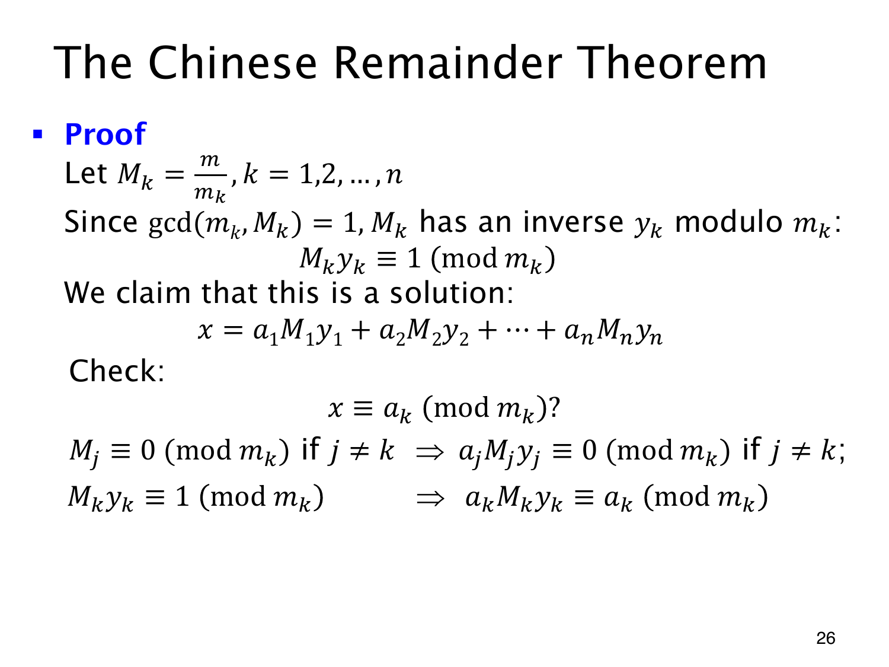

L1.13 · 第 26 页讲解原文
查看这一页课件

让每一项只负责一个余数条件
要同时满足多个条件，可以让第 k 项在模 mk 时提供 ak，在其他模数下都余零。
记 M=m1⋯mn（原页用小写 m），并令 Mk=M/mk。两两互素保证 gcd(Mk,mk)=1，所以能求到 yk 使 Mkyk≡1(modmk)。由此构造
x=k=1∑nakMkyk.
固定一个模数 mk 检查。若 j=k，Mj 的乘积包含 mk，于是 ajMjyj≡0(modmk)；只有第 k 项留下 akMkyk≡ak(modmk)。相加正好得到所需的 x≡ak(modmk)。
因此 Mkyk 起到“选择器”的作用：自己的模数下余 1，其他模数下余 0。对每个 k 检查都成立，便得到同余组的解。
构造出的 x 可能很大，再取 xmodM 得标准解，全体解为标准解加 M 的整数倍。应用前要确认模数两两互素，否则所需的 yk 可能不存在。